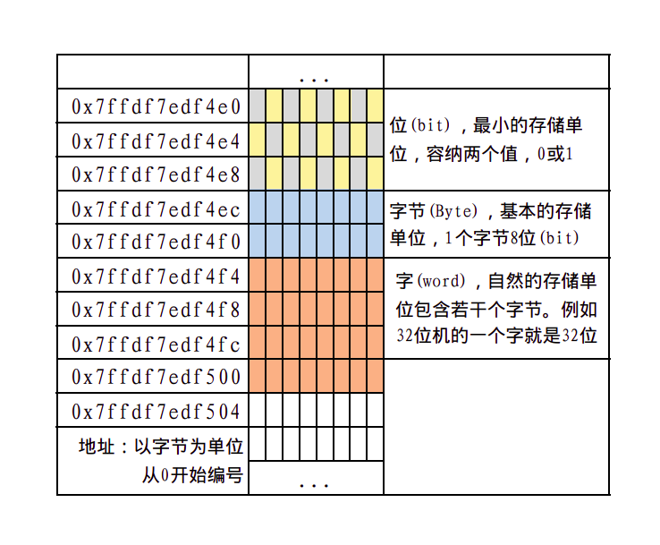
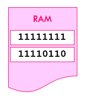
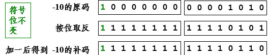
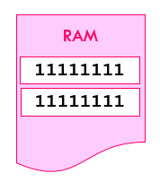
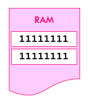
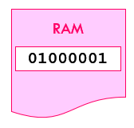
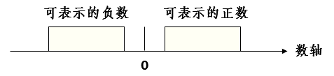
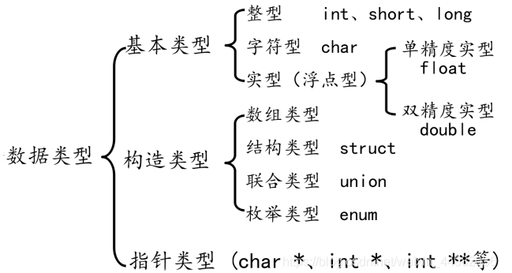

走近C语言程序设计
本章大纲
- C语言程序的基本结构
- C语言的字符集和关键字
- C语言的数据类型
- C语言的格式输入输出
- C语言的算数运算符和运算规则
- C语言的关系运算符和运算规则
| C++ | |
|---|---|
1 2 3 4 5 | |
/*... */ ：注释部分，以增加程序的可读性，不被执行
#include： 预处理命令，包含某一文件内容到本文件
函数：C程序由函数组成，一个C程序有且仅有一个主函数（main函数）。
void main(); 函数说明：说明函数返回值类型、函数名和函数参数
{ } ：函数体，包括变量说明和语句执行部分
１. C语言程序的基本结构
（１）注释
- 单行注释：／／注释内容
- 多行注释：／＊注释内容＊／
（２）预处理命令：#include 包含某个文件
（３）函数：
- C程序由函数组成。
- 一个C程序有且仅有一个主函数main（）
| C | |
|---|---|
1 2 3 4 5 | |
（４）
- 一个C程序由一个或多个函数组成，但有且仅有一个主函数（main函数）；main函数是程序执行的入口，可置于程序的任何位置。
- 程序中可以有预处理命令(如：include 命令)。预处理命令通常放在程序的最前面。
- 每个语句以分号结尾；预处理命令、函数头和花括号“}”之后不能加分号。
- 函数包括函数的说明部分和函数体；函数体包括变量说明部分和执行部分；函数体由一对花括号“{ }”括起来。
- 括在/…/内的文本为多行注释。
- 一行可以写多个语句，一个语句也可以写在多行上。
- 程序区分大小写字母。一般变量、语句等用小写字母书写；符号常量、宏名等用大写字母书写。
- 标识符和保留字之间须加空格以示分隔。
２．C语言的字符集
——来自ASCII表
- Letters（52个大小写字母）
- Digits（10个）
- Blanks（空白符）：空格符、制表符、回车符、换行符
- 图形符号（Graphic characters）：! # % ^ & * ( _ ) - + = ~ [ ] ' | \ ; : " {} , . < > / ?
3. C语言的关键字
关键字也称为保留字
- 类型说明
| C | |
|---|---|
1 2 3 4 5 6 | |
- 语句定义
| C | |
|---|---|
1 2 3 4 5 6 | |
- 存储类别说明：
| C | |
|---|---|
1 | |
- 长度运算符：
| C | |
|---|---|
1 | |
4. C语言的标识符
标识符（Identifiers）是程序中引用对象的名称，用来标识变量、符号常量、数组、函数、结构体、共用体、自定义类型等
命名规则
- 只能包括大小写字母、数字和下划线；
- 首字符必须是字母或下划线；
- 一般标识符的前31个字符有效；（视具体编译器的规定）
- 不能与关键字相同。
5. C语言的数据类型
- 基本类型：整型，字符型，浮点型，枚举类型
- 构造类型： 结构体，共用体，数组
- 指针类型
- 空类型
6. 存储单元
计算机内部存储器的部分空间，一般规定了相应的字节长度
赋值： 破坏性的
读值：非破坏性的
数据、常量、变量、数据类型、
位、字节、字：

字 ：即机器字长，是自然的存储单位。计算机是多少位的，一个字就又多少位。（如64位的机器，一个机器字长就是64位）
整数：
（1）有符号正整数：以二进制补码形式存放，正整数的补码与原码相同


（2）有符号的负整数：以二进制补码的形式存放



（3）无符号整数：所有二进制位都存放数值
 



C标准只规定：short ≤ int ≤ long
最大最小值参考
整型常量：
- 十进制decimal：99、65535
- 八进制octal：0177、0173
- 十六进制hexadecimal：0xfff、0X43D
整型常量默认类型是int，即有符号的基本整型。加上后缀 u 或 U 表示无符号整数，或者 l 或 L 表示长整数。0xb5Lu
整型变量声明：
类型说明符 变量名1，变量名2，...，变量名n；
| C | |
|---|---|
1 2 3 | |
整型变量初始化：
破坏变量声明后的存储空间值，存入新的值

整数溢出：超出整数类型的数值范围。
字符的存储方式
字符编码：
-
计算机使用一种数字编码（整数）来表示字符，每一个字符都对应一个特定的整数。
-
常用的编码是ASCII（美国信息交换用标准码）。
-
- 7位二进制数，十进制码值范围从0到127。
- 一般用一个字节保存，最高位为0。
字符的存储方式与整数相同
-
举例
-
- 字母A的ASCII码值为65，
- 那么在内存中以65的二进制形式存储，
- 且占一个字节。

字符类型和字符变量
字符类型char
-
占一个字节；
-
可视为一个有符号的整数。
字符常量
-
用单引号括起来的一个字符。
-
C语言将字符常量视为int类型。
'x' '9' '+‘
char c1, c2;
c1='a';
c2='bc';
- char类型为8位,一个字节，对于’bc’，将把’b’和’c’的ASCII码值存储在两个字节中，并把’c’赋值给变量c2。不同系统处理方式不同，结果不同。

转义字符
| C | |
|---|---|
1 2 3 4 5 6 7 8 9 10 11 12 13 | |
浮点数存储方式
* 浮点型数据在内存中按指数形式存放。
314.15


s = ±1

浮点数常量：
- 十进制形式
12.3 .65 0.534
- 指数形式：< 小数 > < e | E > < 整数 >
1.2e-2 .1E5 7E0
- 默认类型是double。
- 可以加上后缀 f 或 F 表示float类型，或者 l 或 L 表示long double类型，否则该常量是double类型。
2.3f 1.2L .1E5f
float和double对应的格式说明符为%f、%e。
浮点数舍入误差
| C | |
|---|---|
1 2 3 4 5 6 7 | |

a+20的理论值应该是：12345678920
但是，一个实型变量能够保证的有效数字是7位，后面的数字将被舍去，是没有意义的。
因此，最后得到
b=12345678848.000000
应当避免一个很大的数和一个很小的数直接相加或相减，否则就会“丢失”较小的数。
浮点数溢出：
上溢出
| C | |
|---|---|
1 2 3 4 5 6 | |

下溢出
数据类型小结
-
基本的数据类型包括两大类：
-
- 整数类型
-
浮点类型
-
一般使用int和float表示数，用char表示字符。
-
在使用变量的函数的可执行语句之前声明该变量，并为它选择有意义的名字。
-
初始化变量使用的常量应当与变量的类型相匹配。
